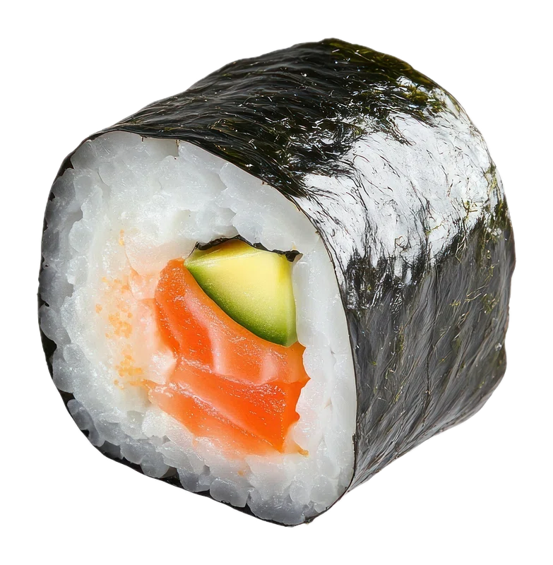

Sushi

source: rawpixel.com
Description
Sushi, its great for you!
Sushi, its tasty for you!
Sushi, its healty for you!
Ingredients
- Sushi rice
- Long picles
- Raw salmon
- Cottage cheese
- Sushi wrap/seaweed wrap
- Rice vinegar
For a good time!
- The salmon
- Get your fresh salmon out!
- Look up a video. Im not gonno write this a test course!
- The rice
- Boil the rice in the rice cooker
- After boiled, add salt and rice vinegar
- soread it and let it fully cool down
- cut long picles, sushi wrap lenghts
- Add rice
- Add salmon
- Add picles
- Add cottage cheece
- Roll and cut to your size
- Papa boom, Papa biim
Back to Odin Recipies